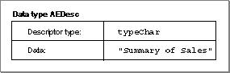
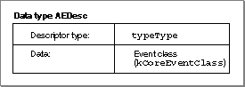
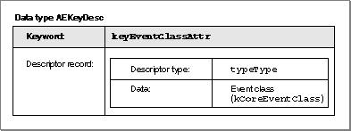
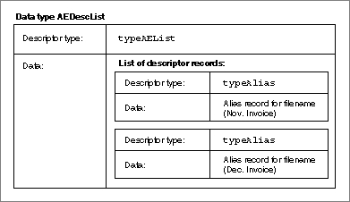
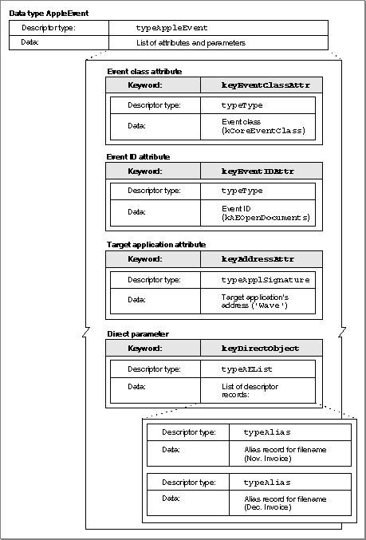

Data Structures Within Apple Events
The Apple Event Manager constructs its own internal data structures to contain the information in an Apple event. Neither the sender nor the receiver of an Apple event should manipulate data directly after it has been added to an Apple event; each should rely on Apple Event Manager functions to do so.This section describes the most important data structures used by the Apple event Manager to construct Apple events. The first structure described is the descriptor record, a data structure of type
AEDesc. Applications may access the data in an individual descriptor record directly if it is not part of another Apple Event Manager data structure.In some cases it is convenient for the Apple Event Manager to describe descriptor records by data types that indicate their contents; thus, it also defines data structures such as type
AEAddressDesc,AEDescList, andAERecord, which are descriptor records used to hold addresses, lists of other descriptor records, and Apple event parameters, respectively. These and most of the other data structures described in this section are formally defined as data structures of typeAEDesc; they differ only in the purposes for which they are used.Descriptor Records
Descriptor records are the building blocks used by the Apple Event Manager to construct Apple event attributes and parameters. A descriptor record is a data structure of typeAEDesc; it consists of a handle to data and a descriptor type that identifies the type of the data to which the handle refers.TYPE AEDesc = RECORD {descriptor record} descriptorType: DescType; {type of data} dataHandle: Handle; {handle to data} END;If a descriptor record exists separately from other Apple Event Manager data structures, it is possible to retrieve the data associated with its handle by dereferencing the handle twice. After a descriptor record has been added to any other Apple Event Manager data structure, you must use Apple Event Manager routines to extract data from the descriptor record.The descriptor type is a structure of type
DescType, which in turn is of data typeResType--that is, a four-character code. Constants are usually used in place of these four-character codes when referring to descriptor types. Descriptor types represent various data types. Here are some of the major descriptor type constants, their values, and the kinds of data they identify.
Descriptor type Value Description of data typeBoolean 'bool' 1-byte Boolean value typeChar 'TEXT' Unterminated string typeLongInteger 'long' 32-bit integer typeShortInteger 'shor' 16-bit integer typeMagnitude 'magn' Unsigned 32-bit integer typeAEList 'list' List of descriptor records typeAERecord 'reco' List of keyword-specified descriptor records typeAppleEvent 'aevt' Apple event record typeEnumerated 'enum' Enumerated data typeType 'type' Four-character code typeFSS 'fss ' File system specification typeKeyword 'keyw' Apple event keyword typeNull 'null' Nonexistent data (handle whose value is NIL)For a complete list of the basic descriptor types used by the Apple Event Manager, see Table 4-2 on page 4-57.
Figure 3-5 illustrates the logical arrangement of a descriptor record with a descriptor type of
typeChar, which specifies that the data handle refers to an unterminated string (in this case, the text "Summary of Sales").Figure 3-5 A descriptor record whose data handle refers to an unterminated string

Figure 3-6 illustrates the logical arrangement of a descriptor record with a descriptor type of
typeType, which specifies that the data handle refers to a four-character code (in this case the constantkCoreEventClass, whose value is'aevt'). This descriptor record can be used in an Apple event attribute that identifies the event class for any Apple event in the Core suite.Figure 3-6 A descriptor record whose data handle refers to event class data

Every Apple event includes an attribute specifying the address of the target application. A descriptor record that contains an application's address is called an address descriptor record.
TYPE AEAddressDesc = AEDesc; {address descriptor record}The address in an address descriptor record can be specified as one of these four basic types (or as any other descriptor type you define that can be coerced to one of these types):Like several of the other data structures defined by the Apple Event Manager for use in Apple event attributes and Apple event parameters, an address descriptor record is identical to a descriptor record of data type
AEDesc; the only difference is that the data for an address descriptor record must always consist of an application's address.Keyword-Specified Descriptor Records
After the Apple Event Manager has assembled the necessary descriptor records as the attributes and parameters of an Apple event, your application cannot examine the contents of the Apple event directly. Instead, your application must use Apple Event Manager routines to request each attribute and parameter by keyword. Keywords are arbitrary names used by the Apple Event Manager to keep track of various descriptor records. TheAEKeyworddata type is defined as a four-character code.TYPE AEKeyword = PACKED ARRAY[1..4] OF Char; {keyword for a } { descriptor record}Constants are typically used for keywords. Here is a list of the keyword constants for Apple event attributes:Here is a list of the keyword constants for commonly used Apple event parameters:
Parameter keyword Value Description keyDirectObject '----' Direct parameter keyErrorNumber 'errn' Error number parameter keyErrorString 'errs' Error string parameter The Apple Event Registry: Standard Suites defines additional keyword constants for Apple event parameters that can be used with specific Apple events.
The Apple Event Manager associates keywords with specific descriptor records by means of a keyword-specified descriptor record, a data structure of type
AEKeyDescthat consists of a keyword and a descriptor record.TYPE AEKeyDesc = {keyword-specified descriptor record} RECORD descKey: AEKeyword; {keyword} descContent: AEDesc; {descriptor record} END;Figure 3-7 illustrates a keyword-specified descriptor record with the keywordkeyEventClassAttr--the keyword that identifies an event class attribute. The figure shows the logical arrangement of the event class attribute for the Open Documents event shown in Figure 3-3 on page 3-9. The descriptor record in Figure 3-7 is identical to the one in Figure 3-6; its descriptor type istypeType, and the data to which its handle refers identifies the event class askCoreEventClass.Figure 3-7 A keyword-specified descriptor record for the event class attribute of an Open Documents event

Descriptor Lists
When extracting data from an Apple event, you use Apple Event Manager functions to copy data to a buffer specified by a pointer, or to return a descriptor record whose data handle refers to a copy of the data, or to return lists of descriptor records (called descriptor lists).As previously noted, the descriptor record (of data type
AEDesc) is the fundamental structure in Apple events, and it consists of a descriptor type and a handle to data. A descriptor list is a data structure of typeAEDescListdefined by the data typeAEDesc--that is, a descriptor list is a descriptor record whose data handle refers to a list of other descriptor records (unless it is an empty list).TYPE AEDescList = AEDesc; {list of descriptor records}Like several other Apple Event Manager data structures, a descriptor list is identical to a descriptor record of data typeAEDesc; the only difference is that the data in a descriptor list must always consist of a list of other descriptor records.Figure 3-8 illustrates the logical arrangement of the descriptor list that specifies the direct parameter of the Open Documents event shown in Figure 3-3 on page 3-9. This descriptor list consists of a list of descriptor records that contain alias records to filenames. (See the chapter "Alias Manager" in Inside Macintosh: Files for a detailed description of alias records.)
Figure 3-8 A descriptor list for a list of aliases

The descriptor list in Figure 3-8 provides the data for a keyword-specified descriptor record. Keyword-specified descriptor records for Apple event parameters can in turn be combined in an AE record, which is a descriptor list of data type
AERecord.TYPE AERecord = AEDescList; {list of keyword-specified } { descriptor records}The handle for a descriptor list of data typeAERecordrefers to a list of keyword-specified descriptor records that can be used to construct Apple event parameters. The Apple Event Manager provides routines that allow your application to create AE records and extract data from them when creating or responding to Apple events.An AE record has the descriptor type
typeAERecordand can be coerced to several other descriptor types. An Apple event record, which is different from an AE record, is another special descriptor list of data typeAppleEventand descriptor typetypeAppleEvent.TYPE AppleEvent = AERecord; {list of attributes and } { parameters necessary for } { an Apple event}An Apple event record describes a full-fledged Apple event. Like the data for an AE record, the data for an Apple event record consists of a list of keyword-specified descriptor records. Unlike an AE record, the data for an Apple event record is divided into two parts, one for attributes and one for parameters. This division within the Apple event record allows the Apple Event Manager to distinguish between an Apple event's attributes and its parameters.Descriptor lists, AE records, and Apple event records are all descriptor records whose handles refer to a nested list of other descriptor records. The data associated with each data type may be organized differently and is used by the Apple Event Manager for different purposes. In each case, however, the data is identified by a handle in a descriptor record. This means that you can pass an Apple event record to any Apple Event Manager function that expects an AE record. Similarly, you can pass Apple event records and AE records, as well as descriptor lists and descriptor records, to any Apple Event Manager functions that expect records of data type
AEDesc.When you use the
AECreateAppleEventfunction, the Apple Event Manager creates an Apple event record containing the attributes for an Apple event's event class, event ID, target address, return ID, and transaction ID. You then use Apple Event Manager functions such asAEPutParamDescandAEPutAttributeDescto add or modify attributes and to add any necessary parameters to the Apple event.Figure 3-9 shows an example of a complete Apple event--a data structure of type
AppleEventcontaining a list of keyword-specified descriptor records that name the attributes and parameters of an Open Documents event. The figure includes the event class attribute shown in Figure 3-7 and the descriptor list shown in Figure 3-8, which forms the direct parameter--the keyword-specified descriptor record with the keywordkeyDirectObject. The entire figure corresponds to the Open Documents event shown in Figure 3-3 on page 3-9.The next two sections, "Responding to Apple Events" and "Creating and Sending Apple Events," provide a quick overview of the steps your application must take to respond to and send Apple events.
Figure 3-9 Data structures within an Open Documents event
